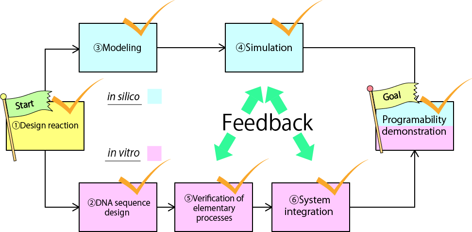
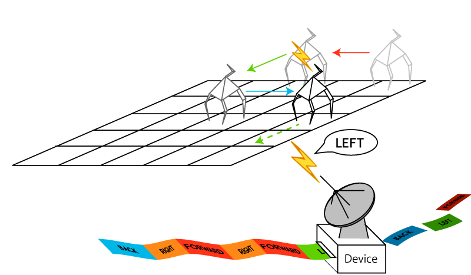

Our Project
Background and Motivation

Developing molecular devices and systems is one of the goals of nanoengineering.
One approach to the goal is using DNA, whose reactions can be programmed based on the Watson-Crick complementary base pairing in double helix. By using DNA, a variety of nanoscale devices has been developed, for example oscillators[1], memories[2], robots[3,4], and calculators[5]. When controlling such devices, functionalizing them one by one autonomously and synchronously is a challenging topic.
In the case of macroscale level, a sequence control, which is a technique of control engineering, is powerful method to synchronize the workflow of machines. It controls machines by giving commands to them in order.
Applying the method in nanoscale provides a way to control molecular devices in a sequential manner.
Project Idea
To realize sequential control in molecule scale, we designed a device which generates single stranded DNAs in order.
In this project, we have two different approaches to develop the device. First approach achieves the function by a collaboration of DNA and enzymes (Enzyme device). the other approach is using only DNA (Enzyme free device). Depending on the system of interest, one can choose one of our devices.
In principle, both of our devices are universal. There is no limitation in number and permutation of output.
We analyze our devices both in vitro and in silico because we can clearly demonstrate the features of our devices. Moreover, we are able to optimize the condition of our devices by feedbacks from the results of chemical experiment and computer simulation.
Project Goal

Our project goals are realizing the devices either in vitro and in silico. To complete our project, we divided our goal into 7sub-goals.
・design a reaction pathway of molecular device that has programmable and autonomous features
・design DNA sequence for the device
・formalize a chemical reaction model
・confirm the behavior of our model
・confirm elementary process of our devices behave as we designed in vitro
・integrate all the reactions and confirm that our device can generate single stranded DNA in order
・confirm that there is no in the number and order of Outputs
Achievement

In this summer, we achieved all the sub-goals. Our design is so elegant that the devices behave completely both in vitro and in silico.
We can program the number and permutation of outputs. Moreover, the time interval of outputs is also programmable by changing concentration of chemical species.
time intervalもプログラムできるように設計されているように書く．
Future Work

Our devices are capable of controling variety of nanoscale devices in asequential manner.
For example, our devices move recently developed molecular robots[3][4] that are controled by stepwise pipetting. By giving commands sequentially in stead of human pipetting, the robots act independently
It is important for some structures made of DNA origami to assemble in order[6]. By releasing single stranded DNA, those structures are autonomously assembled.
A nanoscale sequence control will provide a way of functionalizing molecular devices autonomously and synchronously in the future.
Reference
[1]K.Montagne, R.Plasson, Y.sakai, T Fujii, Y. Rondelez, Mol.Sys.Biol.7 (2011) 1-7
[2]A. Padirac, T. Fujii, Y.Rondelez, Proc.Natl.Acid.Sci.U.S.A. 109 (47) (2012) E3212-E3220
[3]S.M. Douglas, I. Bachelt, G.M. Church, Science 335 (6070) (2012) 831-834 [4]K. Lund, A.J. Hopfield, N. Michelotti, A. Johnson-Buck, J. Nangreave, S. Taylor, R. Pei, M.N. Stojanovic, N.G. Walter, E. Winfree, H. Yan, Nature 465 (7295) (2010) 206-210
[5]L. Qian, E, Winfree, Science 332 (6034) (2011) 1196-1201
[6]S.M. Douglas, H. Dietz, T. Liedl, B.Hogberg, F. Graf, W.M. Shih, nature 459 414-418 (2009)